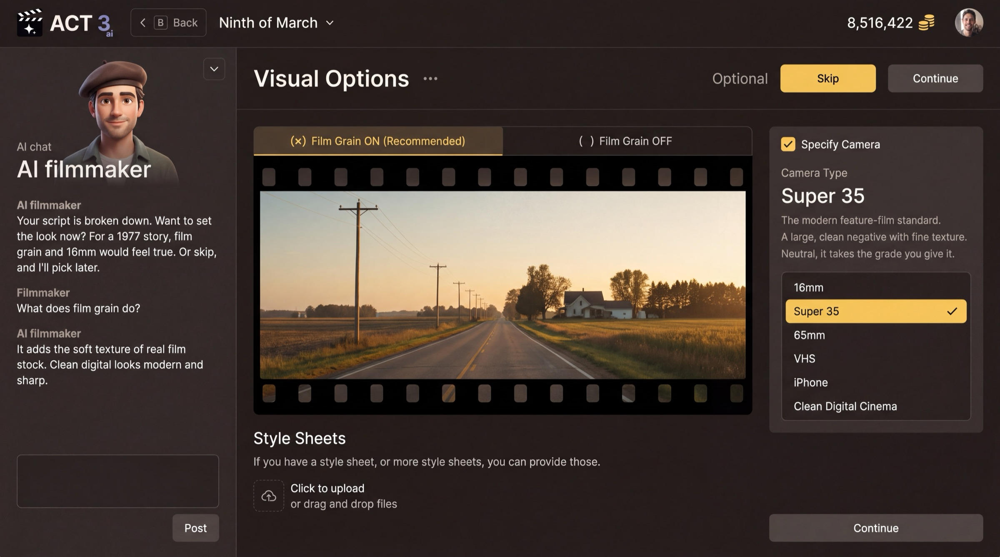

Step 4 of 7
Set the visuals
Set your film's look, or skip it for now. Check Film Grain, Camera Type and Style Sheets. Click Continue, or Skip for the recommended look.

Skip or ContinueWhat this page is
Visual Options is optional, and the page says so next to its buttons. It sets how the picture feels, the way a cinematographer chooses stock and camera before the first day of shooting.
- Film Grain: Film Grain ON (Recommended) adds the soft texture of real film stock. Film Grain OFF keeps a clean, sharp digital image.
- Specify Camera: tick it to choose a Camera Type: 16mm, Super 35, 65mm, VHS, iPhone or Clean Digital Cinema. Super 35 is the modern feature-film standard.
- Style Sheets: upload one or more if you already have a visual reference for the film.
Your decision
Know the look you want? Set it and press Continue. Not sure yet? Press Skip and the film gets the recommended look. You can change these later.
Went the wrong way? Back (or the B key) returns to the Script page.
Why you go next to Render Style
Grain and camera tune the picture. The render style decides what kind of picture it is: live action, animation, a comic book, and more.